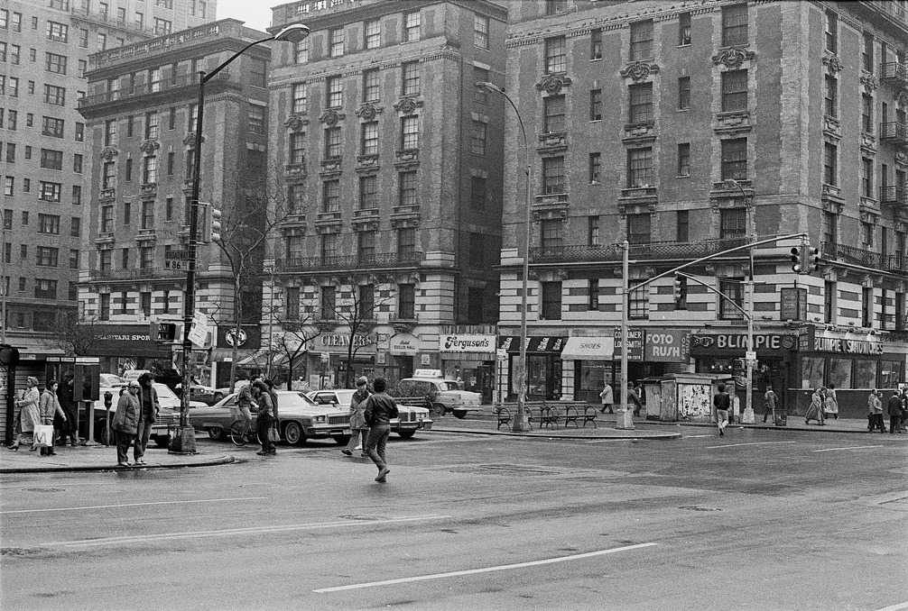

In elementary school, I used to walk down to this Blimpie for lunch. Mmm, healthy. One day they got a Biorhythm machine, where for a quarter you’d get a punchcard pseudoscientific printout of your personality. With the sound of light disco in the background, what could be more awesome than that?